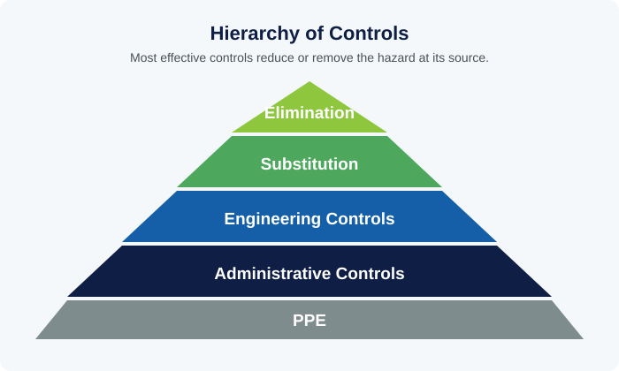

Tier 3
Occupational health and safety is often associated mainly with physically hazardous industries, but the underlying principles — identifying hazards, controlling risk, and reporting problems early — apply equally to office environments and field operations alike.
1. Why Workplace Safety Is Everyone's Responsibility
The International Labour Organization (ILO) frames occupational safety and health as a shared responsibility: employers are generally responsible for providing a safe working environment and clear procedures, while individual staff are responsible for following safety procedures and reporting hazards they observe. Safety fails when either side treats it as solely the other party's job.
The 'hierarchy of controls', a widely used framework in occupational safety practice, ranks ways of addressing a hazard from most to least effective: eliminating the hazard entirely, substituting a safer alternative, engineering controls (physically isolating people from the hazard), administrative controls (procedures, training, signage), and personal protective equipment as the last line of defense. The framework's key insight is that relying primarily on the lowest, least-reliable level of the hierarchy — telling people to be careful, or issuing protective gear — without addressing higher levels first tends to produce weaker safety outcomes than removing or reducing the hazard at its source.

Hazard identification — proactively noticing and reporting conditions that could cause harm before an incident occurs — is most effective when every employee, not just designated safety staff, is expected and encouraged to participate in it, since hazards are often first noticed by the people actually working in a space day to day.
2. Office and Field Safety Basics
Ergonomics — designing a workspace to fit the person using it, rather than expecting the person to adapt to poor workspace design — matters for office-based roles because sustained poor posture, screen positioning, or seating can produce cumulative strain injuries over time, which are preventable through basic adjustments rather than something staff simply have to tolerate as a cost of desk-based work.
Fire safety fundamentals — knowing evacuation routes and assembly points, not blocking fire exits or extinguisher access, and understanding basic response procedures — are a baseline expectation in any workplace, and familiarity with them should not depend on having previously experienced an actual emergency.
Field staff — those working outside a controlled office environment, including at branch offices, member outreach events, or property and construction sites connected to the fund's real estate investments — face a broader and more variable set of hazards than office staff, from road travel risk to site-specific construction hazards, and correspondingly need role-specific safety training beyond generic office guidance.
3. Building a Genuine Safety Culture
Near-miss reporting — documenting incidents that could have caused harm but did not, rather than only formally recording incidents that actually resulted in injury — is a leading indicator that well-run safety programs actively encourage, because near misses reveal the same underlying hazards that eventually produce actual injuries, just before the harm occurs rather than after.
Psychological safety, discussed in the Innovation & Entrepreneurship and Risk Management categories in different contexts, applies directly to safety reporting as well: staff who fear being blamed or seen as troublesome for reporting a hazard or near miss will tend to stay silent, which allows preventable risks to persist until an actual injury forces attention onto them.
A genuine safety culture is reflected less in the existence of a safety policy document and more in everyday behavior: whether staff feel comfortable raising a safety concern, whether such concerns are visibly acted on rather than filed away, and whether safety is treated as integral to how work gets done rather than as a separate compliance exercise layered on top of it.
Knowledge Check: Occupational Health & Safety
10 questions. Finish the reading above, then take the test to check your understanding.